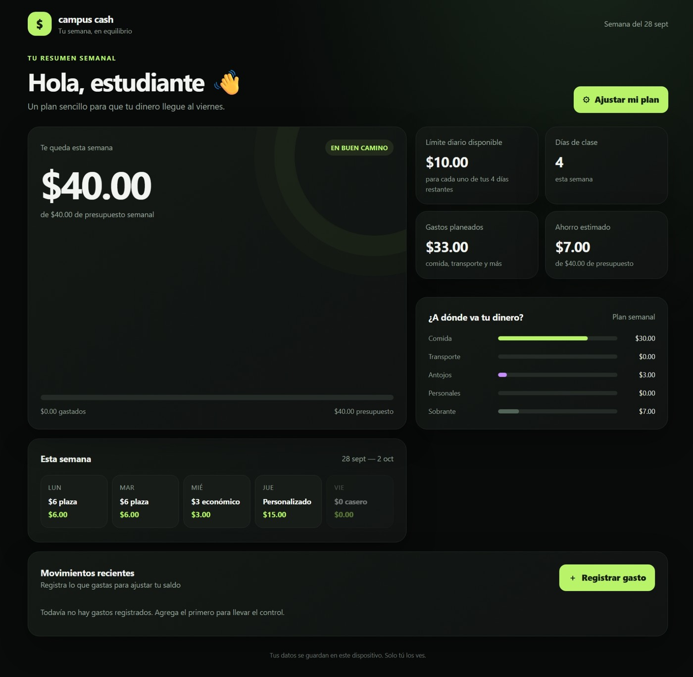
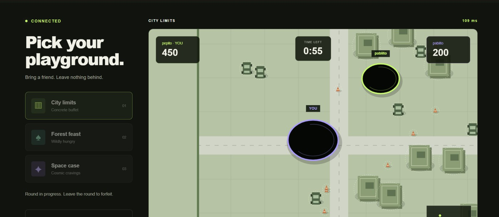

Deportes
Me atraen la energía, la estrategia y el esfuerzo que hay detrás de cada juego.
Me gusta imaginar ideas y convertirlas en experiencias que se puedan explorar. Esta es mi bitácora: proyectos, aprendizajes y una visita sorpresa desde el cielo.
Un espacio para aprender, probar cosas nuevas y guardar aquí lo que voy creando.
CADA IDEA EMPIEZA
CON UNA PREGUNTA.
Soy estudiante de CMP1001 y me gusta aprender creando. He hecho una app para organizar el presupuesto semanal de estudiantes y VOID Arena, un juego multijugador en tiempo real. Disfruto llevar una idea desde el primer boceto hasta algo que se pueda probar.
Mi perfil de GitHubMe atraen la energía, la estrategia y el esfuerzo que hay detrás de cada juego.
Me gusta pensar cómo una herramienta sencilla puede resolver una necesidad real, como organizar gastos.
VOID Arena me permite explorar cómo se siente competir e interactuar en tiempo real.
DOS IDEAS, DOS FORMAS
DE APRENDER HACIENDO.

CAPTURA REAL / PRESUPUESTO01Una app de presupuesto semanal para estudiantes: organiza comida, transporte y gastos personales, y muestra cuánto dinero queda para la semana.
Se abre desde un archivo HTML. El presupuesto y los gastos se guardan en el almacenamiento local del navegador, solo en ese dispositivo; la página reacciona con JavaScript cuando ajustas el plan o registras un gasto.
El repositorio está disponible; falta publicar la app para tener un enlace de demostración.

CAPTURA REAL / PARTIDA02Un juego de agujeros para dos personas en una arena en tiempo real. Los jugadores compiten por el espacio y pueden volver a enfrentarse en una revancha.
Cloudflare Workers sirve la página y las rutas; un Durable Object coordina la partida en vivo y se comunica por WebSockets. D1 guarda cuentas, sesiones, partidas y puntajes.
En el repositorio falta el enlace público de la versión final en Vercel.
Elegí una bitácora de aviación con papel cálido, tinta azul y acentos rojos para darle a mis proyectos un estilo de aventura. De vez en cuando, Snoopy cruza el cielo como un pequeño guiño a su personaje de As Volador.